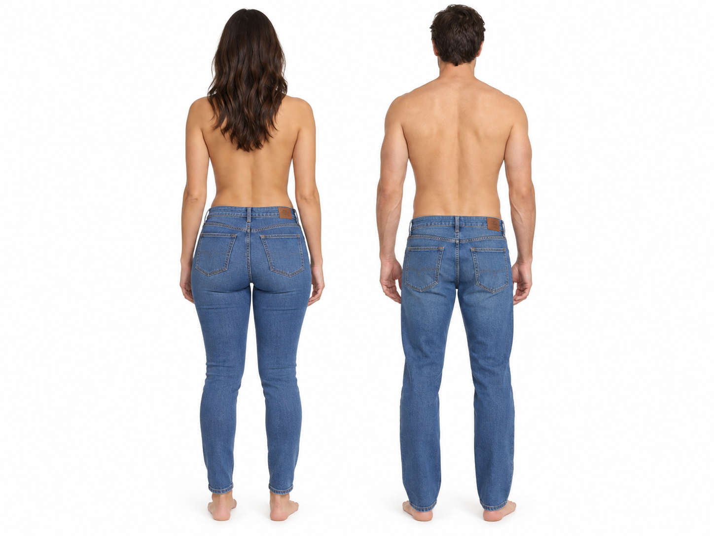
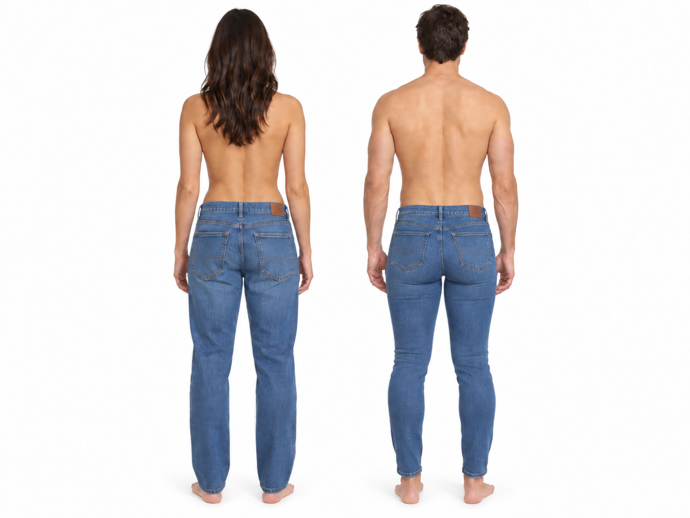

ファッション / 視覚実験 / ジーンズ / シルエット比較
男女でジーンズを入れ替えたら、後ろ姿はどう変わる？
女性向けジーンズを男性へ、男性向けジーンズを女性へ。 そのとき「女性らしさ」「男性らしさ」はどこまで衣服に支配され、どこから身体そのものに残るのか。 2枚のAI生成画像を使って、後ろ姿のシルエットを分解してみる。
※このページはファッション形態の視覚分析を目的としたAI生成画像の比較です。 実測人体データでも、医学・人類学上の定量実験でもありません。
まず画像を見る


ぱっと見て最初に分かるのは、ジーンズを入れ替えても男女の見た目がそのまま入れ替わるわけではない、ということだ。 服はかなり強く見た目を変える。しかし、身体全体の比率を完全には上書きしない。
身体が一次信号であり、ジーンズはその信号に対する増幅器・減衰器である。
1枚目では「身体」と「衣服」が同じ方向を向いている
画像1では、女性側の身体形状と女性向けジーンズの設計が同じ方向に作用している。 腰から臀部に向かって横幅が増え、その後、大腿から足首へ向かって再び細くなる。 つまり輪郭に「細い → 広い → 細い」という変化が出る。
男性側では逆に、肩幅が大きく、腰が狭く、脚が比較的まっすぐ落ちる。 ジーンズ自体も臀部や大腿を強調しすぎず、直線的な見え方を残している。
ここでは身体の特徴と衣服の特徴が協調している。 そのため、男女差が最も分かりやすく見える。
2枚目では「身体」と「衣服」が逆方向を向く
画像2では、女性に男性向けジーンズを、男性に女性向けジーンズを着用させている。 ここで面白いのは、局所的な形はかなり変わるのに、全体の読み取りはそれほど簡単には反転しないことだ。
女性側では、男性向けのストレートなジーンズによって、臀部や大腿の局所的な曲率が弱くなる。 ただし、肩幅、腰幅、骨盤幅、臀部幅など身体全体の比率は残る。
男性側では、女性向けのタイトなジーンズによって臀部や脚の輪郭が強く拾われる。 しかし、それでも肩から腰までの逆三角形構造は消えない。
つまり、ジーンズは身体を「別の性別」に変えるものではない。 むしろ、すでに存在する形態情報を強調したり、鈍らせたりする。
人間は「尻」だけを見ているわけではない
後ろ姿だけを見たとき、顔や胸部の情報はほぼ使えない。 それでも男女差はかなり読み取れる。 ということは、人間の視覚系は身体の複数の比率を同時に見ていると考えたほうが自然だ。
- 肩幅 / 腰幅
- 臀部幅 / 腰幅
- 臀部幅 / 足首幅
- 腰から臀部への横幅変化
- 臀部から大腿への収束
- 脚の付け根位置
これらは単独ではなく、まとまりとして読まれる。 だから臀部だけを強調しても、全体のシルエット認識が完全に反転するわけではない。
シルエットを関数として考える
身長方向の位置を y、その高さで見える横幅を W(y) とする。
すると後ろ姿は、「高さごとに横幅がどう変わるか」という関数として近似できる。
W(y) = F(B(y), garment, tension, seam, texture)
B(y) は身体そのものの横幅。
garment は服の形、
tension は布の張力、
seam は縫い目、
texture は色落ちや表面情報だ。
特に重要なのは dW/dy、つまり高さ方向に横幅がどれだけ変化するか。
腰から臀部へ幅が増え、そこから脚へ向かって減るなら、曲線的なシルエットになる。
男性向けジーンズはこの変化を平滑化しやすく、女性向けジーンズは局所的な曲率を拾いやすい。
ジーンズのどこがシルエットを変えるのか
股上
股上は腰位置の見え方を変える。 高い股上はウエストと臀部の境界を強く見せやすく、結果として腰臀比を強調しやすい。
ヨーク
後ろ腰にあるV字や弧状の切り替えは、臀部上端の見え方を変える。 これは単なる縫製線ではなく、目にとっての「形状ガイド」になる。
ポケット位置
後ろポケットの高さ、間隔、角度は臀部の大きさや高さの知覚に影響する。 実際の輪郭を変えなくても、基準線を置くだけで目は形を違って読む。
フィット
タイトなジーンズは身体表面の曲率をそのまま布に転写する。 ルーズなジーンズは、身体の細かな凹凸を平均化する。 信号処理っぽく言えば、ルーズフィットは一種の smoothing である。
脚のテーパー
足首に向かって細くなるほど、臀部は相対的に大きく見える。 絶対サイズを変えなくても、比率を変えるだけで印象はかなり動く。
ただし、この2枚は厳密なA/Bテストではない
ここは重要だ。 AI画像生成では「ジーンズだけを入れ替えた」つもりでも、 臀部形状、大腿幅、腰幅、布の張り、ポケット位置、姿勢などまで微妙に再生成される可能性がある。
つまり、画像2は単純に
Image2 = Image1 + jeans_swapとは限らない。 より実態に近いのは、
Image2 = regenerate(Image1, jeans_swap_instruction)である。 したがって、この比較は「視覚仮説の生成」には使えるが、 「女性向けジーンズによって臀部が何％大きく見える」といった定量評価には使えない。
本当に測るなら、2×2の実験にする
厳密に調べるなら、3D人体モデルを使って身体形状を固定し、ジーンズだけを交換する必要がある。
| 身体 | 男性向けジーンズ | 女性向けジーンズ |
|---|---|---|
| 女性モデル | A | B |
| 男性モデル | C | D |
カメラ、照明、姿勢、身長スケールを完全に固定し、 そのうえで人間評価または輪郭指標によって「女性的 / 男性的」に見える度合いを測る。
SilhouetteScore
= β₀
+ β₁ Sex
+ β₂ Jeans
+ β₃ Sex×Jeans
+ ε
最も面白いのは β₃、つまり身体とジーンズの交互作用だ。
女性向けジーンズは単独で女性的なのか。
それとも女性身体と組み合わさったときに特に女性的になるのか。
ここまで分離できれば、単なる「見た目の感想」からデザイン実験に進める。
結論
この比較から最も妥当なのは、次の結論だ。
ファッション設計とは、布を身体に貼り付ける作業ではない。
人間が身体をどう読むか、その視覚変換関数を設計する仕事である。
女性向けジーンズは腰、臀部、大腿の曲率を拾いやすく、 男性向けジーンズは直線性を残しやすい。 ただし、衣服より上位にあるのは身体全体の幾何学であり、ジーンズだけでその読み取りが完全に反転するわけではない。
つまり「男性向け」「女性向け」という分類は、単なる商品カテゴリーではない。 それぞれが身体のどの情報を残し、どの情報を強調し、どの情報を隠すかという、 小さな視覚アルゴリズムなのである。